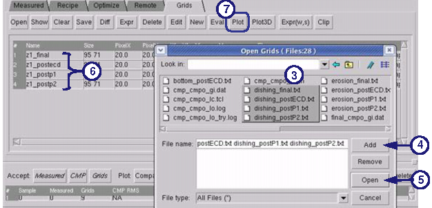

You should check
the optimization results to tune your model. The results are in
the grid files. The CMP Model Builder GUI allows you to view the
results and compare simulated versus measured values in plots.
Prerequisites
You must have an optimized CMP
model.
Procedure
- Go to the Grids tab.
- Click Open to
select the grid files to view.
- Highlight the group of plots
you want to view together (for example, dishing plots, erosion plots
or ThickNT plots).
Figure 1. Viewing Plots
- Click Add.
- Next, click Open.
This populates the list of grid files to view.
- Highlight the grids you want
to plot.
- Click Plot.
This plots of all the selected grids as seen in Figure 2.